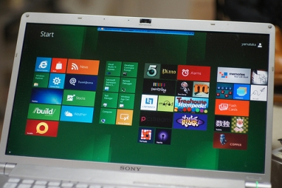

O Índice de Experiência (Windows Experience Index), inaugurado no Windows Vista, é uma ferramenta valiosa de avaliação do PC, ainda que não ofereça uma visão da usabilidade. Com alguma exatidão, o índice aponta o gargalo do computador, e essa é sua grande utilidade. A escala do ranking vai de 1 a 7,9, mas é limitado a 5,9, caso a máquina tenha processador de 64 bits e 4 GB de memória RAM ou menos. Acontece que esta ferramenta foi sutilmente removida das versões 8 e 8.1 do Windows. Para chegar a ela, só mesmo recorrendo à linha de comando. Veja como proceder.
.

.
1) Feche todas as janelas de aplicativos antes de acionar o comando.
.
2 ) Abra um prompt de comando com o atalho Windows + R e digite cmd.exe. Presisone Enter em seguida. Na janela aberta, digite o comando winsat formal. Aguarde a execução terminar.
.
3) Em seguida, digite powershell. No novo prompt de comando, escreva o comando Get-WmiObject –class win32_winsat.
.
A avaliação final é exibida (WinSPRLevel). Acima dela estão as avaliações individuais por componente.